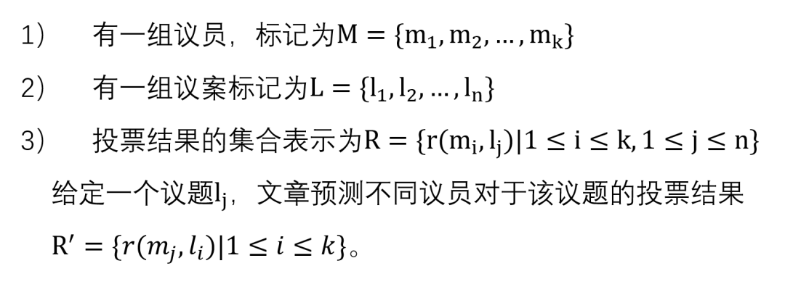

收录于合集

作品简介
【作者】 Yuqiao Yang*, Xiaoqiang Lin*, Geng Lin, Zengfeng Huang, Changjian Jiang, Zhongyu Wei (*表示共同一作)

人工智能算法预测美国议员的议案投票倾向性
Joint Representation Learning of Legislator and Legislation for Roll Call Prediction
内容摘要
本文针对量化政治科学领域（quantitative political science）中的议员行为预测问题进行研究，提出引入议员关系进行议员表示向量的自动化学习，并结合议员和议题的表示向量对议员的投票结果进行预测。该方法相对于以往的SOTA投票预测方法在预测准确率上有显著提升。本文提供了源自美国国会议员投票数据的模型评测语料集合，可以进一步推动相关领域的研究发展。文章由复旦大学大数据学院魏忠钰副教授、国际关系与公共事务学院蒋昌建副教授联合指导完成，发表于人工智能领域的顶级会议Interactional Joint Conference on Artificial Intelligence – Pacific Rim International Conference on Artificial Intelligence (IJCAI-PRICAI) 2020。
01
**文章概述
**
量化政治科学领域旨在通过定量的方法分析立法相关的数据来理解政府或者政治人物的政治行为。国会针对议案的投票数据（roll call data）是议员对于议题投票结果的记录，近年来吸引了很多量化政治研究者的注意。基于议案投票数据，研究者们得以学习立法者的各种行为，其中最为广泛使用的模型是由[1]提出的ideal point model。该模型通过将议员和议题分别投射到同一个向量空间，并通过计算空间中议员和议题的距离来预测议员对议题的投票结果。该方法只利用了议员对于议题的历史投票结果，而忽略了其他的上下文信息，并且无法对新的议题做预测，所以预测效果不尽如人意。[2]的工作在ideal point model的基础上进一步引入文本信息来提升预测效果，但ideal point model的基本设定还是限制了它建模更丰富上下文信息的能力。本文借鉴表示学习的研究进展，将相关模型引入到量化政治科学领域对国会议员和国会议案进行更好的特征表示，以提升议员政治行为预测的准确率。文章的主要贡献如下：
（1）文章引入图卷积神经网络（GCN）以利用议员之间的关系网进行议员的表示学习。对于议题，我们采用循环神经网络（RNN）以利用文本的语义信息进行议题的学习。
（2）文章引入triplet loss将两种不同实体（议员和议题）的表示映射到同一个空间，以进行议题和议员表示的联合建模。
（3）文章基于美国国会（U.S. Congress）的相关数据构建了第一个议案结果投票预测的公开评测语料集合。实验结果显示我们的模型在此数据集上的有效性。
02
数据集介绍
本文的数据集包含从1993 到2018的参议院议案投票结果，其中包含215,857条议题，2,347个议员，以及2,234,082条投票记录。
● 议员数据：每个议员有一个独特的ID，其所在的党派以及所在的州● 议题数据：其包含的信息见图1● 投票纪录数据：给出所有议员对于某一议题的投票结果，其包括三种立场“yeas” (yes), “nays” (no), and “not vote“。
对于数据集的一些描述性统计见图2.
03
任务描述和模型方法

我们的模型大致分为四块，分别为基于卷积神经网络的议员表示学习，基于长短时记忆网络的议题表示学习，基于Triple Loss的联合表示学习以及基于投票结果分布的投票结果预测。模型框架如图3所示。
3.1 基于卷积神经网络的议员表示学习
在这个模块里，我们利用立法者的背景信息初始化立法者的表示向量，并利用立法者成员之间的关系网络信息对表示进行更新。
（1） 立法者表示向量初始化
我们首先将立法者的背景信息嵌入到一个低维的向量<img src=’/images/2080/9.gif’ width=‘19’ height=‘20’ />，这个向量由3部分组成，立法者的ID，党派，以及所在州
（2）议员间关系网络的搭建
（3） 基于GCN的议员表示学习
我们利用GCN对于议员的初始化向量表示进行更新，公式如下：
3.2 基于长短时记忆网络的议题表示学习
对于法案，我们使用法案的标题和法案的描述作为输入，利用LSTM模型进行编码，得到了法案的表示向量：
3.3基于Triple Loss的联合表示学习
3.4 基于投票结果分布的投票结果预测
由上面3个模块的训练，我们得到议员和议题在同一空间里的表示，此时，对于一个议题来说，我们可以计算所有议员与这个议题的距离，并且按照距离从小到大的顺序进行排序，这样一来，我们就可以得到各议员对于议题的偏好程度的排序，此时我们只需要这个议案的投正/中立/负票的比例，就能得到最终的预测。这一节，我们给出了如何对投票结果分布进行预测。我们提出了一种基于语义GCN的投票结果分布预测的方法。这个方法首先计算议题之间的相似度，我们为每个议案使用text rank提取关键字并计算这些关键字的glove向量的平均向量，基于这个向量我们计算法案之间的相似性，通过这个相似度的数值构建一个邻接矩阵，矩阵上的元素代表议题之间的相似程度（相似度越大数值越大）。使用第三小节中提到的议题初始表示输入语义GCN中我们得到议题新的表示，将这个表示输入到两层的MLP对三种立场的比例进行预测，流程图如图5。
04
实验结果
4.1投票结果预测模型总体表现
我们的模型最终的预测达到78.09%，显著高于其他baseline，并且当我们的模型使用ground- truth的投票比例时，我们可以达到81.86%的预测效果，结果提升十分可观（见表1）。
4.2 关于党派总体立场对议员个体投票行为的影响的探究
同一个党派中的议员总是趋向于对一个议题有相同的态度。所以党派信息对于投票结果的预测是至关重要的。 LSTM+ party 模型的总体性能验证了我们的观点。我们在以下几个定义中进一步探讨这一话题。
4.2.1 党内一致性指标
我们将一个党派中对于一个议题的大多数立场定义为为这个党派的主要立场。在此基础上我们将党内一致性定义为，争对所有议题，党内议员的立场与党派主要立场一致的人数占总人数的比例的平均值。我们最终得到数据集中党派一致性为88.42%，其中民主党为87.05%，共和党为89.11%。这表明依然有一部分人不追随党派的立场。
4.2.2 议员偏离度
4.2.3议题偏离度与政策领域偏离度
4.3 议员与议题向量表示空间分布分析
为了验证我们的模型的确可以达到将议员对议题的偏好在空间分布中体现出来，我们将一个法案的表示，以及其对应的投票议员的表示进行降维投射在二维平面上查看结果。可以看到这里投正票的议员分布紧靠议题的表示，而投反票的议员分布于议题的另外一侧（见图7）。
05
总结
本文研究美国国会的议案投票数据，建立了第一个关于议员和议题以及美国公开唱名投票的数据集。并提出一个框架来学习议案和议员的向量表示并在此基础上进行投票结果预测。
参考文献：
[1] Joshua Clinton, Simon Jackman, and Douglas Rivers. The statistical analysis of roll call data. American Political Science Review, 98(2):355–370, 2004
[2] Sean Gerrish and David M Blei. Predicting legislative roll calls from text. In Proceedings of the 28th international conference on machine learning (icml-11), pages 489–496, 2011


好好学习，天天“在看”